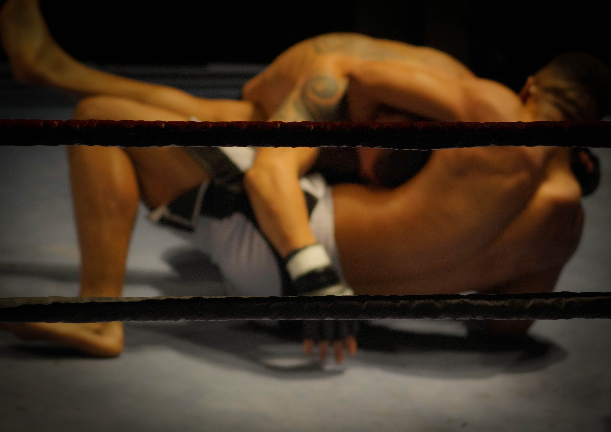

Sports to overall strength every day.
There are tons of reasons why people make sports such as making competition, others to find purpose in life, Others play to release stress, others do it lose weight or improve their general health. but here we provides you 10 sports to overall strength an have energetic health.
1.Swimming
Is very important becouse it helps you to move your whole body against the resistance of the water, and to manage weight, and enhances fitness of all your body.

Swimming engages almost every major muscle of your body.
2. Tennis
Is a good sport for maintaining health, fitness, strength and agility, which improves flexibility, balance, and control.

which help body to maintain proper alignment. But not also, it helps you to meet with new friend.

3. Rowing
Rowing is a sport of propelling a boat by means of oars, and for that reasons it has many good effect on strength averalling such as Weight Loss, Affordable, Upper-Body Workout and Lower-Body Workout.
the scientific fact says that Rowing every day make your body competitive rowers use up almost twice as many calories over 2,000 meters as runners burn up during a 3,000-meter steeplechase. Rowing Creates a Healthy Balance, and it makes Your Heart Healthy. but remember to do it three times a week.
4. Wrestling
Is the sport or activity of grappling with an opponent and trying to throw or hold them down on the ground, typically according to a code of rules.
but lets it be clear, not for every one to play that sport becouse it can lead to injuries, broken bones, ... but the scientific says that making wrestling is a great way to get physically fit and help to gain strength.
5. Squash
Squash is a ball sport played by two (singles) or four players (doubles squash) in a four-walled court with a small, hollow rubber ball.
increasing of strength and fitness of your body, and build hand–eye coordination which allows the eyes to indirectly coordinate the movements of the hands.

6. Basketball
Basketball was invented in 1891, this game become more popular i this days , and it Burns Calories, and Builds Bone Strength, Boosts The Immune System, and it help coordination and Motor Skills.


7. Cycling
This the sport or activity of riding a bicycle, and in aerobic activity which means that your heart, blood vessels and lungs all get a workout. And daily exercise like Cycling improve your cardiovascular health, lift your mood, and boost your fitness. and it reduce bally fast.

8. Cross-Country Skiing
Cross-country skiing is a form of skiing where skiers rely on their own locomotion to move across snow-covered terrain, rather than using ski lifts or other forms of assistance. and it is efficient way to exercise a large number of muscles at once. and make You get a full-body workout.

9. Gymnastics
Is exercises of developing or displaying physical agility and coordination, it prevent Disease, and Bone Health, and helps you Get Stronger. but also doing it 3 times a week.

10. Volleyball
Is a game for two teams, usually of six players, in which a large ball is hit by hand over a high net, and the science proved that volleyball Builds and Tones Muscles, and Burns Fat and Calories in your body.